선생님이 신청한 학급을 승인해 학급 코드를 내주고,
아이들의 녹음을 들으며 채점해 결과보고서 PDF를 만듭니다.
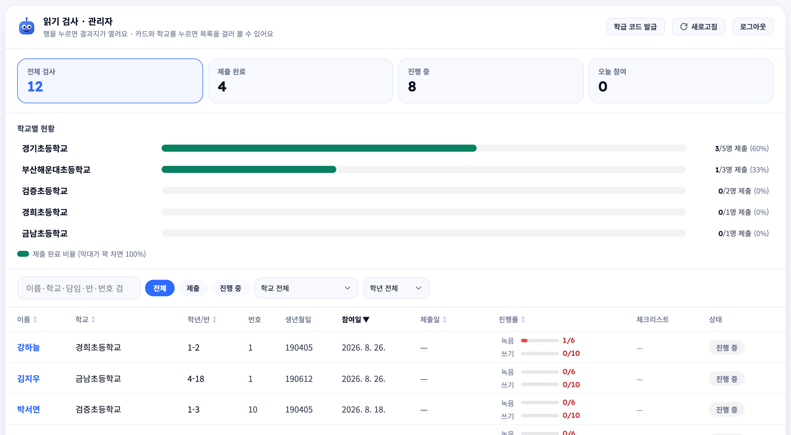
검사 목록 화면입니다. 행을 누르면 그 아이의 결과지가 열립니다.
크롬이나 엣지 브라우저, 그리고 관리자 비밀번호 하나면 됩니다. 설치할 것은 없습니다.
https://speech-survey.vercel.app/admin으로 들어갑니다
즐겨찾기에 넣어 두면 편합니다.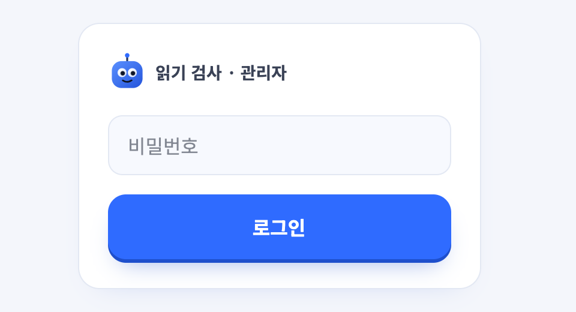
| 화면 | 하는 일 |
|---|---|
| 검사 목록 | 누가 검사했는지 보고, 채점할 아이를 고릅니다(3장 참고). |
| 결과지 | 목록에서 행을 누르면 열립니다. 녹음을 듣고 채점합니다(4장 참고). |
| 학급 코드 | 신청을 승인하거나 코드를 만듭니다. 검사 목록 오른쪽 위 학급 코드 발급으로 들어갑니다(2장 참고). |
학급 코드는 6자리입니다. 선생님은 이 코드를 넣어야 검사를 시작할 수 있습니다. 보통은 선생님 신청을 승인하고, 급할 때만 직접 발급합니다.
선생님은 https://speech-survey.vercel.app/apply에서 학급과 학생 명단을 올려 신청합니다.
신청이 들어오면 학급 코드 화면에 대기 중 N건이 뜹니다.
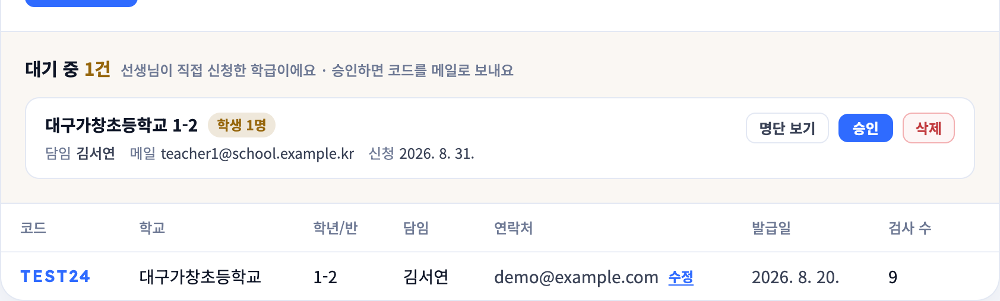
| 문구 | 할 일 |
|---|---|
| 승인 완료 · 선생님께 코드 메일을 보냈어요 | 끝입니다. |
| 승인은 됐지만 메일을 보내지 못했어요 | 안내 문구 복사를 눌러 선생님께 문자·메일로 직접 보내 주세요. |
| 이미 승인된 학급이에요 | 선생님이 코드를 받았는지 확인하고, 못 받았으면 안내 문구 복사로 보내 주세요. |
삭제하면 함께 올라온 명단도 지워지고 되돌릴 수 없습니다. 선생님께 알림이 가지 않으니 필요하면 따로 연락해 주세요.
신청 없이 학급을 열어야 할 때 씁니다.
https://speech-survey.vercel.app와 선생님용 설명서도 함께 보내 주세요.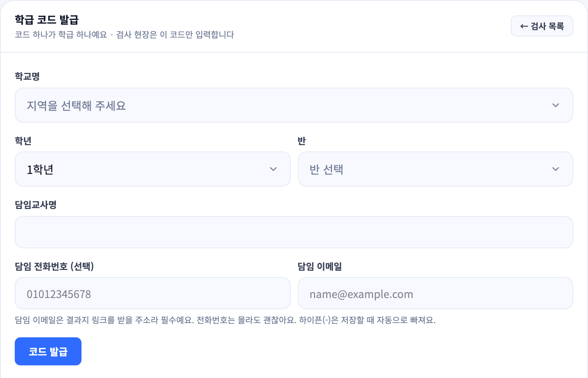
학교·학년·반은 나중에 고칠 수 없습니다(이메일만 고칠 수 있습니다). 명단이 없어서 선생님이 아이 정보를 직접 입력하게 됩니다.
| 항목 | 설명 |
|---|---|
| 검사 수 | 그 코드로 시작한 검사 수입니다. |
| 수정 | 담임 이메일을 고칩니다. 결과지 링크가 이 주소로 갑니다. |
| 삭제 | 검사 수가 0인 코드에만 나타납니다. |
코드만 알면 그 학급 명단(이름·생년월일)을 볼 수 있습니다. 단체방이나 공유 문서에 올리지 마세요.
누가 검사했고 무엇을 채점할지 봅니다. 행을 누르면 결과지가 열립니다.
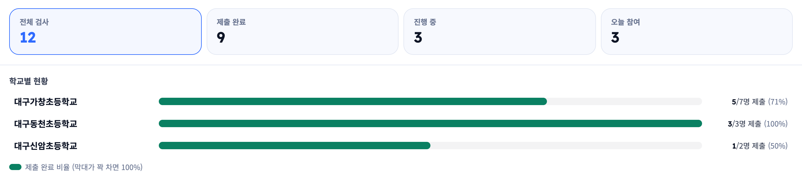
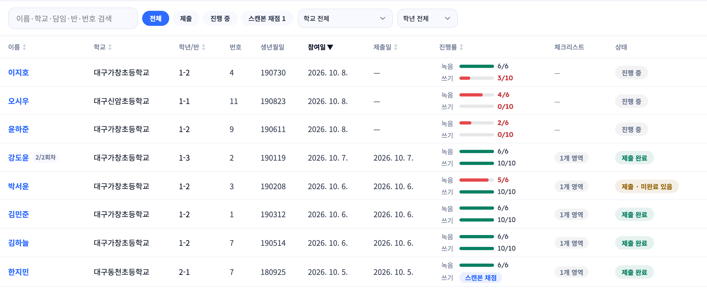
| 표시 | 할 일 |
|---|---|
| 진행 중 | 아직 제출하지 않은 검사입니다. 채점하지 마세요. |
| 제출 완료 | 채점하면 됩니다. |
| 제출 · 미완료 있음 | 미녹음 과제가 있는 검사입니다. 채점하면 됩니다. 빠진 녹음은 자동으로 0점이 됩니다. |
스캔본으로 채점할 검사가 있으면 검색창 옆에 스캔본 채점 N 탭이 생깁니다.
결과지에서 녹음을 들으며 점수를 넣습니다. 손을 멈추면 저절로 저장됩니다.
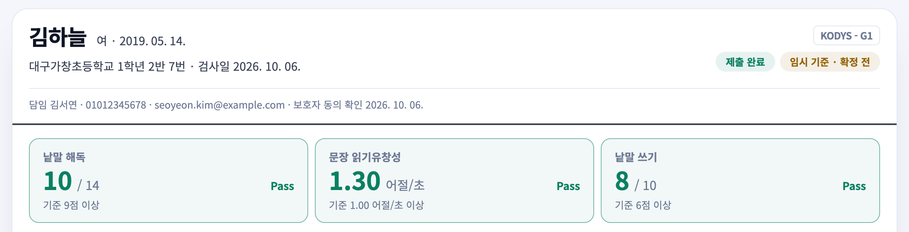
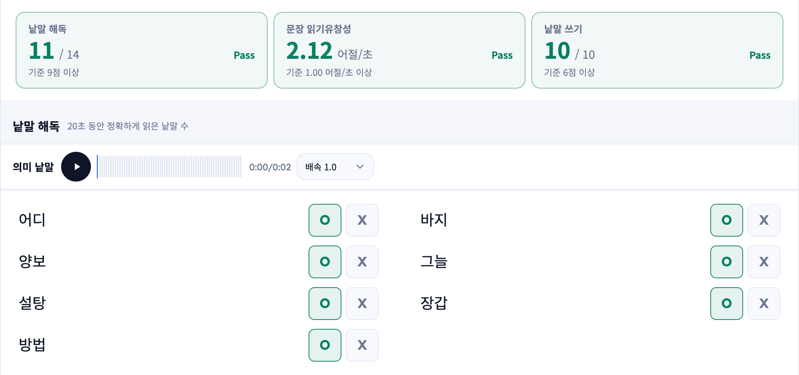
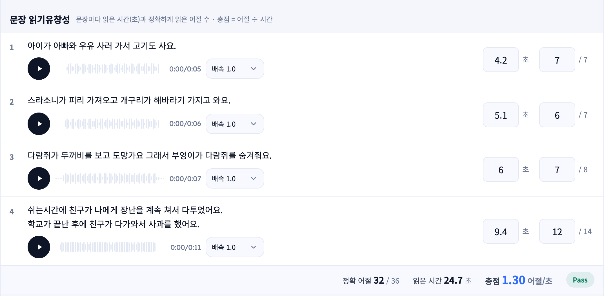
재생기를 누른 뒤 스페이스로 재생·정지, ← →로 5초씩 옮깁니다. 배속을 0.75배로 낮추면 받아 적기 쉽습니다. 다시 녹음한 과제는 1차 2차 칩으로 골라 들을 수 있습니다. 재생이 안 되면 다시 받기를 누르세요.
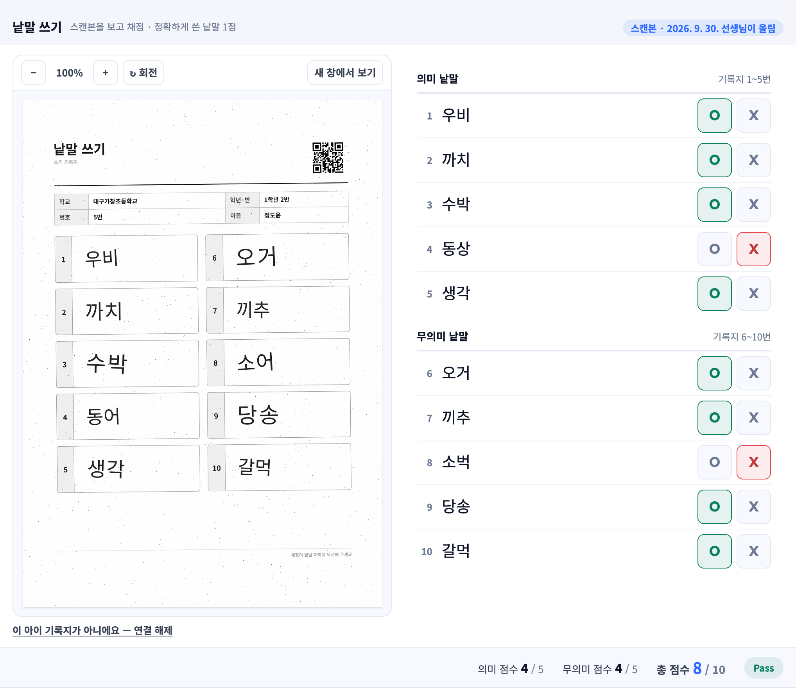
| 표시 | 뜻 |
|---|---|
| 채점 전 | 아직 채점하지 않았습니다. 0점이 아닙니다. |
| 미녹음 | 녹음이 없습니다. 자동으로 0점이 되고 고칠 수 없습니다. |
| 저장 실패 | 아이가 읽었지만 녹음이 올라오지 않았습니다. 0점으로 처리됩니다. |
| Pass Fail | 과제별 판정입니다. |
결과지 위쪽 정보 수정에서 번호·이름·성별·생년월일을 고칩니다. 학년과 반은 고칠 수 없습니다.
결과지 맨 아래 검사 기록 삭제를 누르면 녹음·점수·아이 정보가 모두 지워집니다. 지우기 전에 결과보고서 PDF를 먼저 받아 두세요.
채점을 마친 뒤 학교와 보호자에게 가는 결과 문서입니다. 결과지 아래 결과보고서 PDF 다운로드로 받습니다.
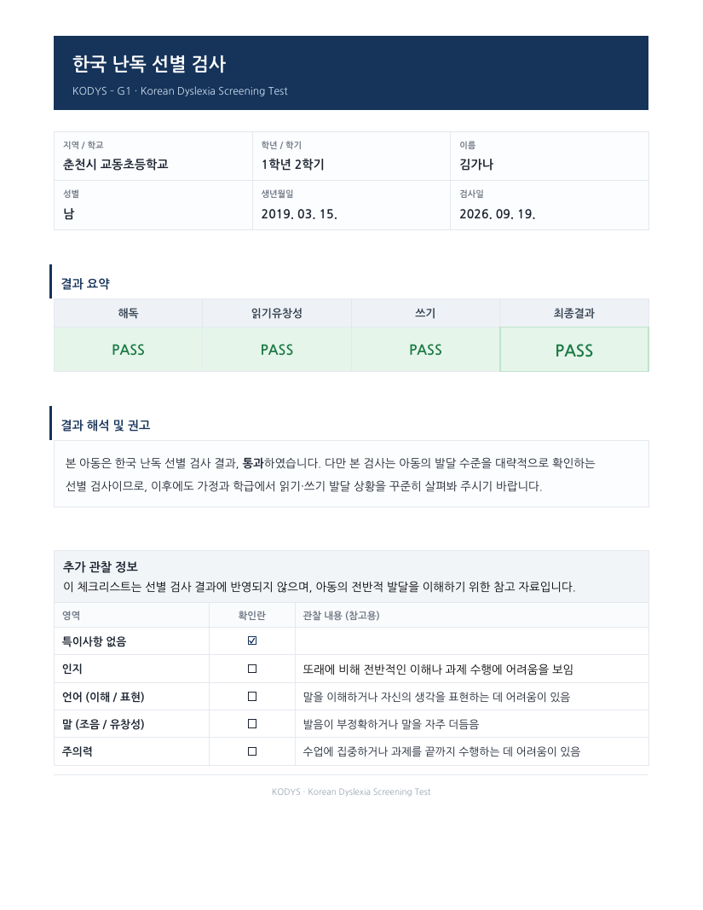
선생님이 검사 화면의 결과지 받기 →로 메일 링크를 받아 내려받습니다. 관리자는 채점만 끝내면 됩니다.
선생님이 코드를 못 받았대요
학급 코드 화면에서 그 학급을 찾습니다. 대기 중이면 승인을,
발급 목록에 있으면 그 코드와 검사 주소 https://speech-survey.vercel.app를 알려 주세요.
선생님이 「코드를 확인해 주세요」가 뜬대요
아직 승인하지 않았거나, 코드를 지웠거나, 잘못 친 것입니다. 코드에는 0·O·1·I·L이 쓰이지 않습니다.
결과지 링크 메일이 다른 주소로 갔대요
학급 코드 발급 목록에서 그 학급의 수정으로 이메일을 고친 뒤, 선생님께 다시 받으라고 알려 주세요.
녹음이 안 들리거나 비어 있어요
선생님께 연락해 다시 검사해 달라고 요청하세요. 다시 검사하면 새 회차로 쌓이고 이전 기록은 남습니다.
선생님이 쓰기를 잘못 넣고 제출했대요
화면에서 표시한 쓰기는 고칠 수 없습니다. 선생님께 다시 검사해 달라고 하고, 새 기록이 들어오면 이전 기록을 지우세요.
같은 아이가 목록에 두 번 있어요
다시 검사한 것입니다. 선생님께 확인한 뒤 필요 없는 쪽을 지우세요.
학급 코드를 지우려는데 삭제 버튼이 없어요
그 코드로 한 검사 기록이 있어서입니다. 검사 기록을 먼저 지워야 합니다.
채점이 저장됐는지 모르겠어요
「자동 저장됨」이 보이면 저장된 것입니다. 오류가 보이면 창을 닫지 말고 채점 저장을 누르세요.
비밀번호를 잊었어요
화면에서 다시 만들 수 없습니다. 개발 담당자에게 새 비밀번호를 요청하세요.
자리를 뜰 때는 로그아웃합니다. 명단은 확인한 뒤 바로 접습니다. 오래 방치된 신청은 정리합니다(아이 명단이 붙어 있습니다).